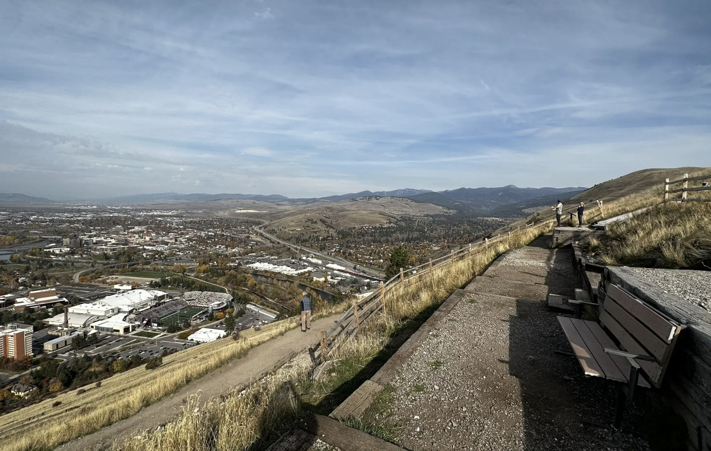
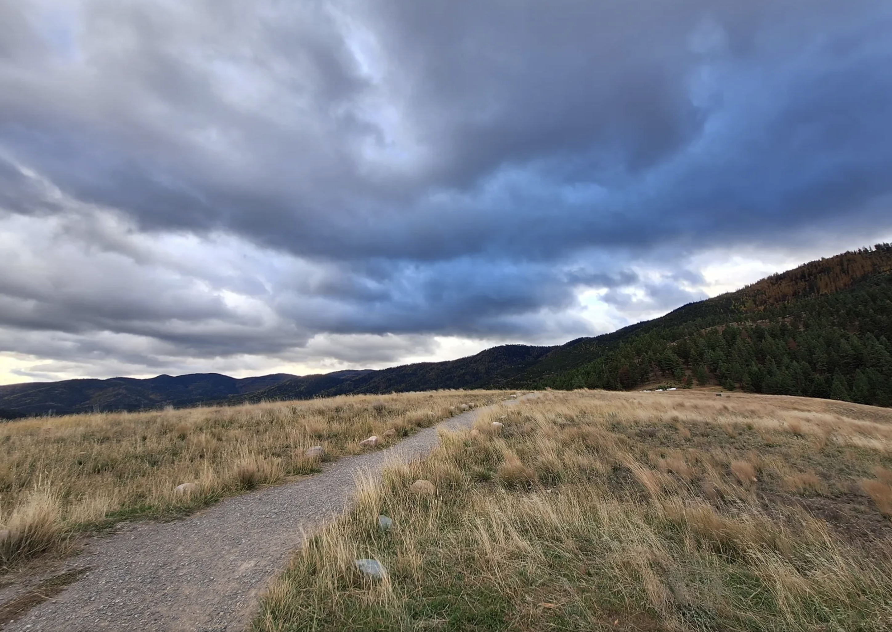
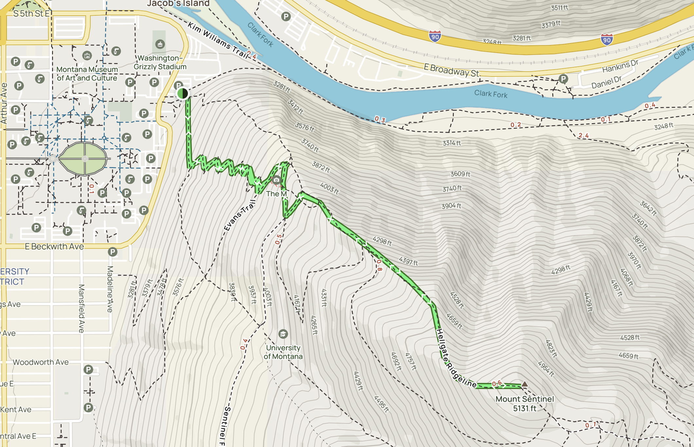

Missoula Hikes
Popular hikes in the area are:
The 'M' Trail
Barmeyer Trail
Mount Sentinel via Hellgate Ridgeline
Missoula M 1.2 miles

Barmeyer Trail 3.1 miles

Mount Sentinel via Hellgate Ridgeline 3.1 miles
